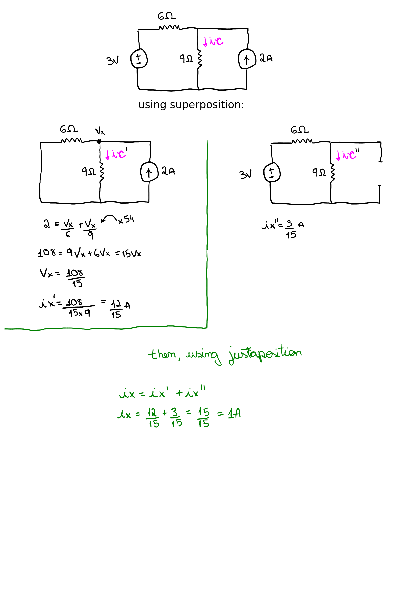
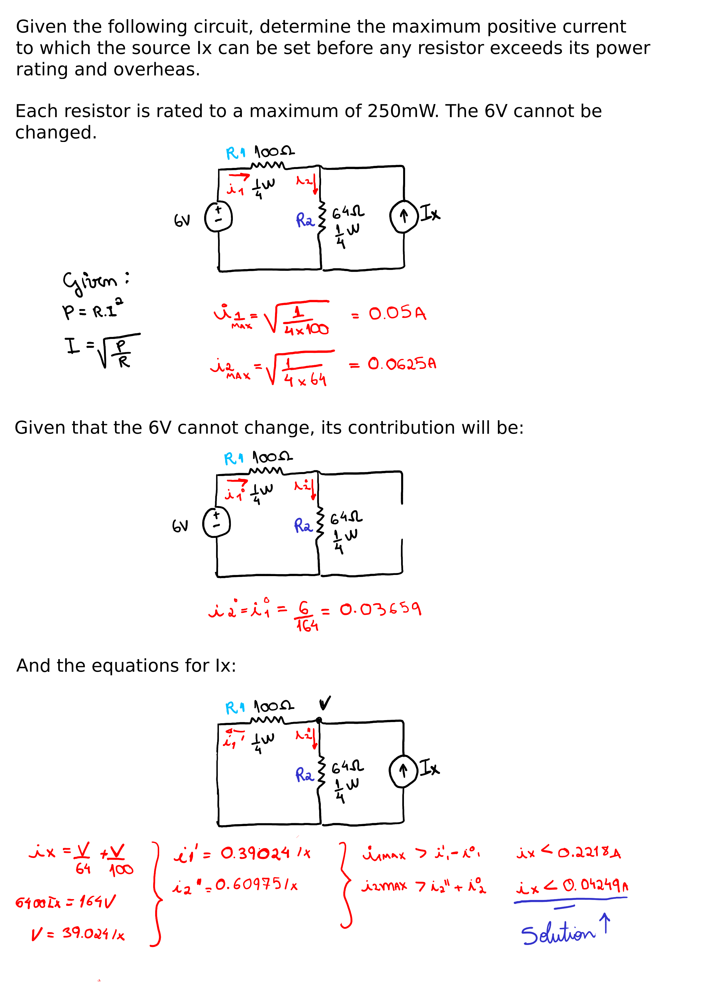
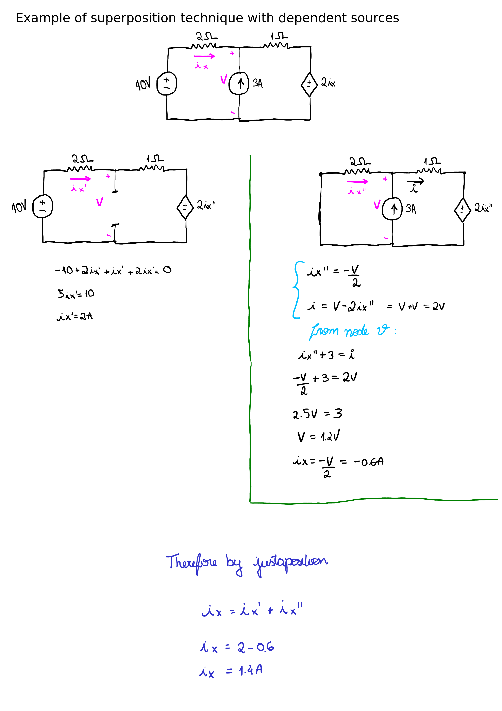

Linearity and Superposition
Created at: 2025-11-15
Linear circuits can be analysed with a technique called "Superposition".
A linear circuit is a circuit composed by independent sources, linear elements,
and linear dependent sources. Those are all components that have a linear
voltage-current relationship.
The superposition principe states that the response in a linear circuit having
more than one independent source can be obtained by adding the responses caused
by the separate independent sources acting alone.
Tips:
- Independent voltage sources become short circuits. I.e., when you "turn off"
(0V) a voltage source, it becomes a short circuit.
- Independent current sources become open circuits. I.e., when you "turn off"
(0A) a current source, it becomes an open circuit.
- Multiplying all independent sources by K results in all the current and
voltage responses being multiplied by the same factor "K".
- This type of analysis might end up generating little circuits, but it
strengths come from identifying the significance of various parts of a more
complex circuit. This is often done in transistor and phasor analysis.
- The most common analysis (power) is not subject to superposition.
Examples


